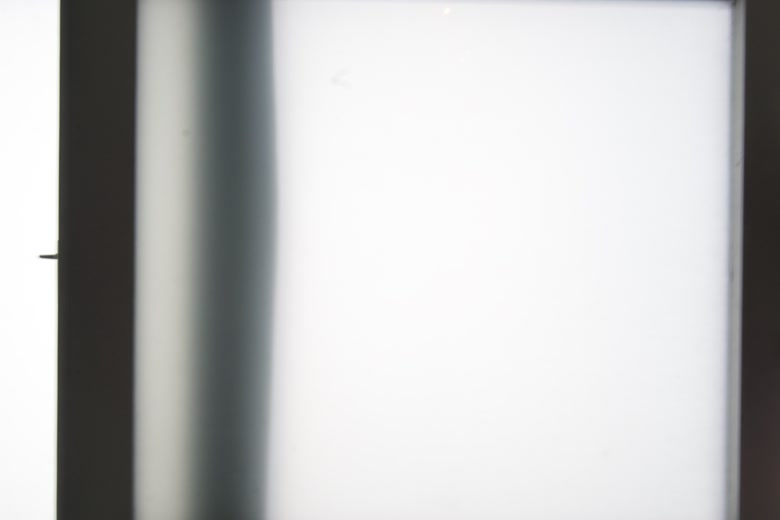

Sebastian P.

sebastianpdele@gmail.com
Automotive Sound Design
AVAS (Acoustic Vehicle Alerting System) - a mandated safety feature for electric and hybrid cars to alert pedestrians to a vehicle's presence. I wanted to create a sound that is in line with our natural environment, so I mixed a synthesized engine sound with nature recordings that modulate with the speed of the car. There is an additional tonal component made using granular synthesis and a street recording for added realism.
Chimes serve as notifications or warnings, while Ticks provide feedback from buttons and dials. I spliced recordings from piano improvisations at home to create the chimes, placing tape, felt, paper, and other objects on the piano strings to produce unique timbres. For the ticks, I used textures from jewelry and other household objects.
Field Recordings
Recordings captured with various microphones. Stereo pairs for ambiance, contact mics for sensing vibrations through objects, and electromagnetic field mics for previously inaudible soundscapes.
Compositions
Compositions made on my computer. Typically left in their original form.
Collaborations
Ongoing remote work with a recording artist and friend, Eddie Finol. I help shape his music from raw studio outtakes (vocal and instrumental recordings) into complete songs. This is done through lots of deleting, rearranging, and back-and-forth idea sharing, as well as mixing, effects, and field recording placement.
Sampler
A sample recording and playback system developed in Pure Data. It allows for basic sample manipulation, with an emphasis on playhead modulation.